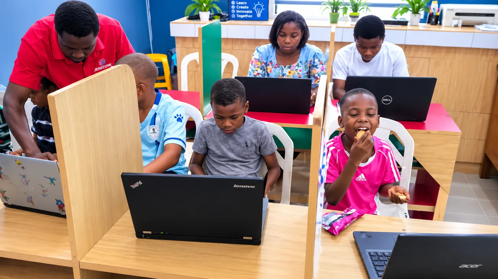
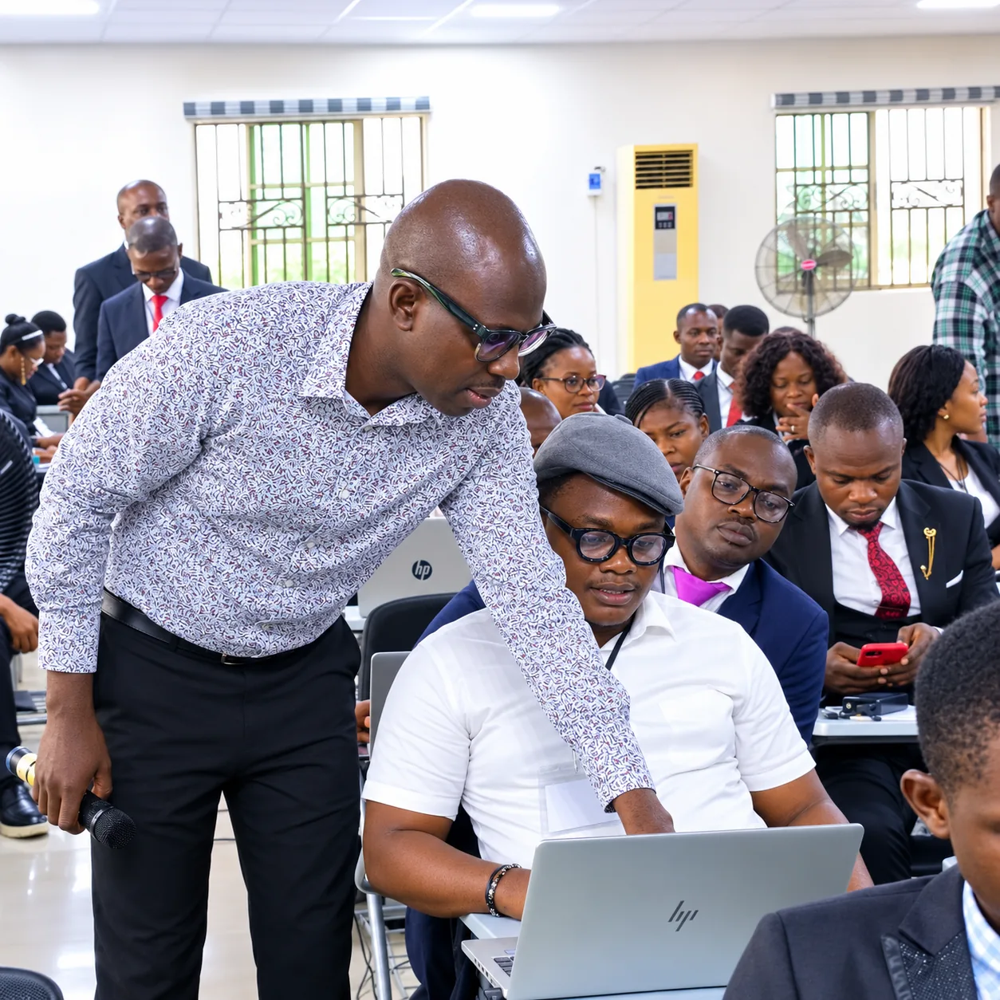

Gallery
Training Gallery
Real classroom images from JENECONK AI and automation training sessions.
Open gallery ->JENECONK AI Academy
AI Academy is JENECONK's training pathway for two clear audiences: administrators and organisations that need practical AI for work, and children or young learners who need guided bootcamp experiences.
JENECONK Digital Academy students can submit assignments, receive assessment and view feedback online.
Administrators Training
For administrators, churches, schools, businesses and teams, Academy sessions are built around practical outcomes: writing better prompts, preparing reports, drafting letters, creating presentations, researching faster, summarising meetings, organizing knowledge and connecting tools into repeatable workflows.

Bootcamp focus
This demo was not built by a software engineer. It was created by a young learner trained inside JENECONK AI Academy in less than five days, showing parents and schools what guided, practical AI learning can unlock quickly.
AI friends and guides
The Academy now has visible learning guides that make AI training feel approachable without reducing the seriousness of the programme. They help younger learners understand creativity, safety, problem-solving and responsible AI use.

Proof paths
These pages make the Academy visible through real photos, structured moments and a detailed case study.

Gallery
Real classroom images from JENECONK AI and automation training sessions.
Open gallery ->Moments
A clearer story of what happens inside practical AI Academy sessions.
View moments ->
Case study
Regions 33, 5 and 55 trained on practical AI and automation for church administration.
Read story ->